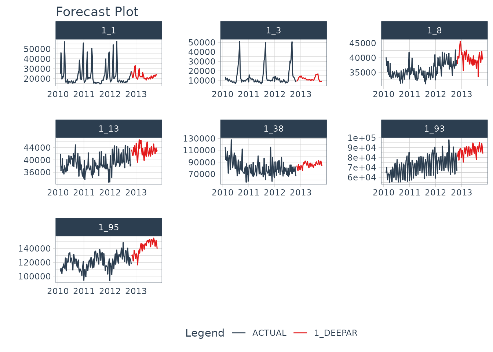
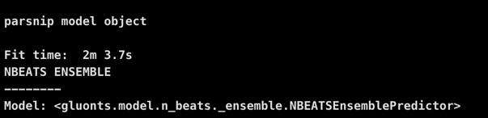
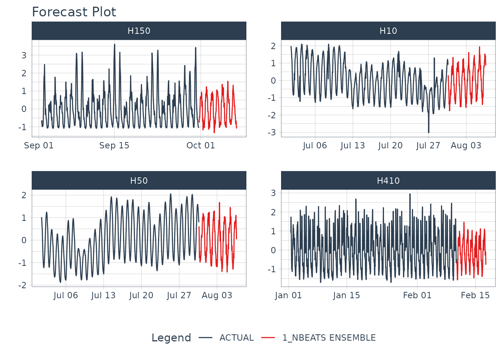

Making an N-Beats Ensemble
Let’s get started by making an N-BEATS ENSEMBLE. N-BEATS is a powerful algorithm that has shown exceptional results1. In a matter of minutes, you’ll generate the 4 forecasts shown below. If you’d like to improve your time series forecasting abilities, then please take my High-Performance Time Series Course.

Installation
Next, set up the Python Environment with install_gluonts(). You only need to run this one time, and then you are good to go.
Troubleshooting Installation
Python Environment setup is always fun. Here are a few recommendations if you run into an issue.
Check to make sure Conda or Miniconda is available using
reticulate::conda_version(). If no conda version is returned, then usereticulate::install_miniconda()to install. Then (re-)runinstall_gluonts().Check if GluonTS (Python) is available using
reticulate::py_module_available("gluonts"). If this returnsTRUE, then your installation has succeeded in building the environment, but you may have other issues like missing C++ build tools (next).Windows 10 error: Microsoft Visual C++ is required. Here are the instructions for installing the C++ tools needed.
Other installation issues. Please file a GitHub issue here.
Time Series Data
We’ll use the m4_hourly dataset, which contains 4 hourly time series.
data <- m4_hourly %>%
select(id, date, value) %>%
group_by(id) %>%
mutate(value = standardize_vec(value)) %>%
ungroup()
data
#> # A tibble: 3,060 x 3
#> id date value
#> <fct> <dttm> <dbl>
#> 1 H10 2015-07-01 12:00:00 1.98
#> 2 H10 2015-07-01 13:00:00 1.95
#> 3 H10 2015-07-01 14:00:00 1.78
#> 4 H10 2015-07-01 15:00:00 1.62
#> 5 H10 2015-07-01 16:00:00 1.33
#> 6 H10 2015-07-01 17:00:00 1.16
#> 7 H10 2015-07-01 18:00:00 0.682
#> 8 H10 2015-07-01 19:00:00 0.0876
#> 9 H10 2015-07-01 20:00:00 -0.252
#> 10 H10 2015-07-01 21:00:00 -0.591
#> # … with 3,050 more rowsWe’ll create the forecast region using future_frame(). We are forecasting 1 week (24x7 timestamps) into the future.
HORIZON <- 24*7
new_data <- data %>%
group_by(id) %>%
future_frame(.length_out = HORIZON) %>%
ungroup()
new_data
#> # A tibble: 672 x 2
#> id date
#> <fct> <dttm>
#> 1 H10 2015-07-30 16:00:00
#> 2 H10 2015-07-30 17:00:00
#> 3 H10 2015-07-30 18:00:00
#> 4 H10 2015-07-30 19:00:00
#> 5 H10 2015-07-30 20:00:00
#> 6 H10 2015-07-30 21:00:00
#> 7 H10 2015-07-30 22:00:00
#> 8 H10 2015-07-30 23:00:00
#> 9 H10 2015-07-31 00:00:00
#> 10 H10 2015-07-31 01:00:00
#> # … with 662 more rowsMaking an N-Beats Ensemble Model
We’ll create a model using the N-BEATS ENSEMBLE algorithm using the nbeats() function.
- This is a univariate modeling algorithm that ensembles (combines) multiple N-BEATS Deep Learning models.
- We select the Ensemble Version of N-BEATS by setting the engine to
gluonts_nbeats_ensemble. - The meta-learner uses 3 sub-models by adjusting the
lookback_length. We can include more sub-models adjusting thebagging_size.
model_fit_nbeats_ensemble <- nbeats(
id = "id",
freq = "H",
prediction_length = HORIZON,
lookback_length = c(HORIZON, 4*HORIZON),
epochs = 5,
num_batches_per_epoch = 15,
batch_size = 1
) %>%
set_engine("gluonts_nbeats_ensemble") %>%
fit(value ~ date + id, data)An NBEATS ENSEMBLE is produced.
model_fit_nbeats_ensemble
Forecasting
With a model in hand, we can simply follow the Modeltime Workflow to generate a forecast for the multiple time series groups.
modeltime_forecast_tbl <- modeltime_table(
model_fit_nbeats_ensemble
) %>%
modeltime_forecast(
new_data = new_data,
actual_data = data,
keep_data = TRUE
) %>%
group_by(id) We can visualize the forecast with plot_modeltime_forecast().
modeltime_forecast_tbl %>%
plot_modeltime_forecast(
.conf_interval_show = FALSE,
.facet_ncol = 2,
.facet_scales = "free",
.interactive = FALSE
)
Saving and Loading Models
GluonTS models will need to “serialized” (a fancy word for saved to a directory that contains the recipe for recreating the models). To save the models, use save_gluonts_model().
- Provide a directory where you want to save the model.
- This saves all of the model files in the directory.
- Note that N-BEATS models can be VERY LARGE.
model_fit_nbeats_ensemble %>%
save_gluonts_model(path = "nbeats_ensemble_model", overwrite = TRUE)You can reload the model into R using load_gluonts_model().
model_fit_nbeats_ensemble <- load_gluonts_model("nbeats_ensemble_model")Take the High-Performance Forecasting Course
Become the forecasting expert for your organization
High-Performance Time Series Course
Time Series is Changing
Time series is changing. Businesses now need 10,000+ time series forecasts every day. This is what I call a High-Performance Time Series Forecasting System (HPTSF) - Accurate, Robust, and Scalable Forecasting.
High-Performance Forecasting Systems will save companies by improving accuracy and scalability. Imagine what will happen to your career if you can provide your organization a “High-Performance Time Series Forecasting System” (HPTSF System).
How to Learn High-Performance Time Series Forecasting
I teach how to build a HPTFS System in my High-Performance Time Series Forecasting Course. You will learn:
-
Time Series Machine Learning (cutting-edge) with
Modeltime- 30+ Models (Prophet, ARIMA, XGBoost, Random Forest, & many more) -
Deep Learning with
GluonTS(Competition Winners) - Time Series Preprocessing, Noise Reduction, & Anomaly Detection
- Feature engineering using lagged variables & external regressors
- Hyperparameter Tuning
- Time series cross-validation
- Ensembling Multiple Machine Learning & Univariate Modeling Techniques (Competition Winner)
- Scalable Forecasting - Forecast 1000+ time series in parallel
- and more.
Become the Time Series Expert for your organization.
References
1: N-BEATS: Neural basis expansion analysis for interpretable time series forecasting https://arxiv.org/abs/1905.10437